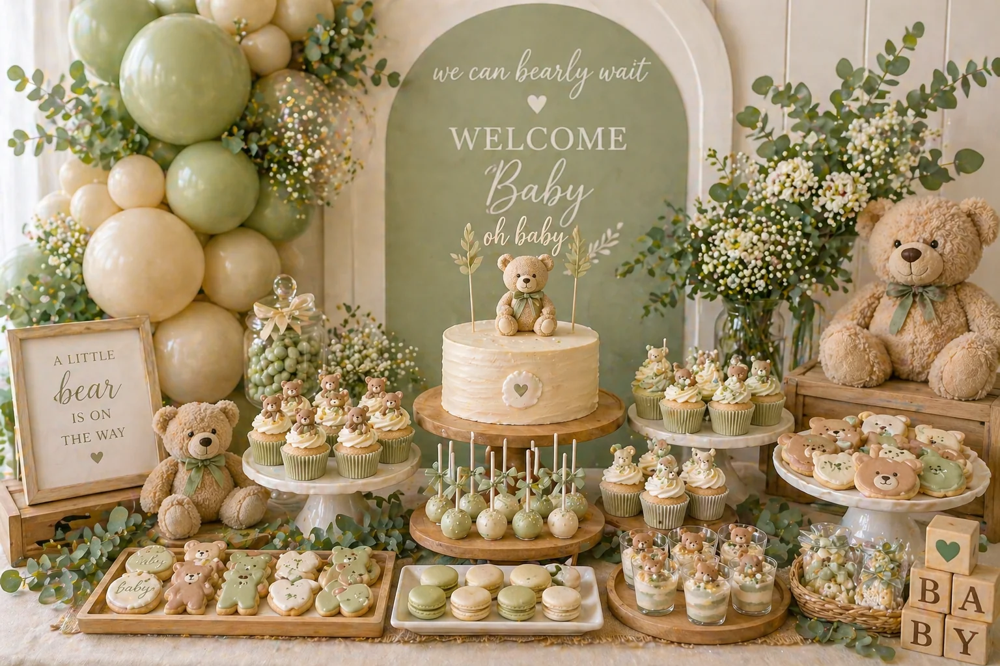
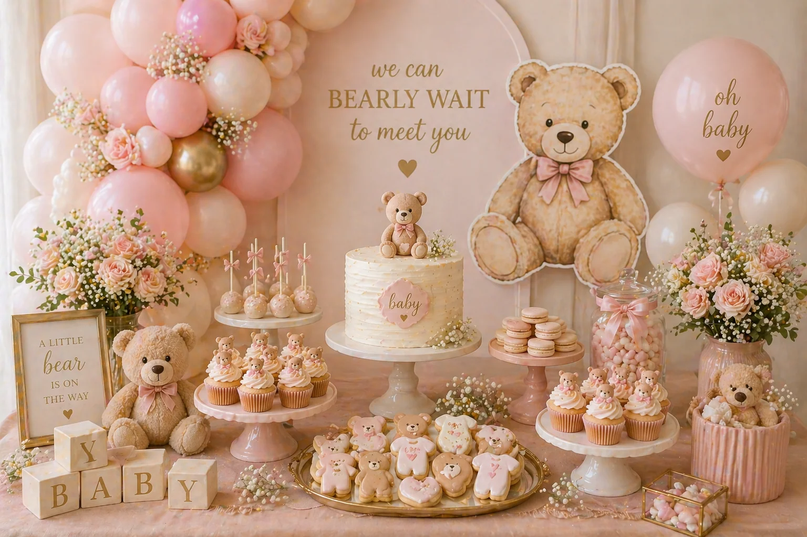

A teddy bear baby shower dessert table is soft, timeless and full of charm. With warm neutral balloons, a beautiful cake, teddy bear cupcakes, cookies, cake pops and gentle florals, this theme works beautifully for baby showers that feel warm, welcoming and genuinely photo-ready. It is one of the most versatile themes because it works equally well in classic neutral tones, fresh sage green, soft blush pink or even a polished luxury palette.
At Little Moment Studio, our focus is baby shower balloon styling and celebration setups. We do not make cakes or cupcakes ourselves, but we know how important the dessert table is to the overall baby shower look. This guide is focused on teddy bear baby shower inspiration — colour palettes, cake and cupcake ideas, balloon combinations and styling details that bring the whole theme together.
If you would like cupcakes or a cake to complement your balloon display, we are happy to recommend a trusted local cake maker. For more baby shower balloon ideas, see our teddy bear baby shower ideas guide.
Why Teddy Bear Baby Shower Tables Are So Popular
Teddy bear baby shower tables work so well because the theme feels sweet without being too bright or childish. It can be styled in a luxury way, a rustic way or a soft neutral way, making it one of the most flexible and enduring baby shower themes. Unlike themes that depend on specific characters or strong colours, a teddy bear table ages beautifully in photographs and suits almost any venue.
The best teddy bear tables feel soft, calm and coordinated, with gentle colours repeated across the balloons, cake, cupcakes, flowers and props. A backdrop, a balloon garland and a well-arranged dessert table together create a baby shower setup that gives every guest a genuinely beautiful photo moment.
| Element | Teddy Bear Baby Shower Idea |
|---|---|
| Balloon garland | Beige, cream, ivory, sage or blush tones — frames the dessert table and creates the backdrop |
| Cake | Teddy bear topper, soft buttercream or semi-naked finish |
| Cupcakes | Teddy bear toppers, neutral swirls, soft sprinkles |
| Cookies | Teddy bears, baby grows, hearts, clouds and wooden blocks |
| Cake pops | Cream, beige, sage or blush dipped pops |
| Macarons | Neutral, sage or blush tones with bear ear or bow details |
| Florals | Baby’s breath, roses, eucalyptus or pampas grass |
| Props | Teddy bears, wooden blocks, wicker baskets and framed signs |
| Backdrop | ‘Welcome Baby’ or ‘Oh Baby’ lettering, neutral arch or balloon display |
Teddy Bear Baby Shower Colour Palettes
Choosing the colour palette first makes everything else easier to plan. Share it with your balloon stylist, cake maker and florist so every element coordinates naturally from the start. The easiest way to make the table feel polished is to repeat the same three to four colours gently across the balloons, cake, cupcakes, flowers and props.
Classic Neutral
Beige, cream, soft brown, ivory. The most timeless teddy bear palette — warm, gentle and universally flattering.
Sage Teddy Bear
Sage green, ivory, beige, eucalyptus green. Natural and botanical — popular for gender-neutral baby showers.
Blush Teddy Bear
Blush pink, ivory, champagne, soft gold. Soft and pretty — a feminine take on the classic teddy bear theme.
Baby Blue Teddy Bear
Baby blue, white, beige, soft gold. A classic baby boy shower palette with a teddy bear warmth.
Luxury Neutral
Champagne, pearl white, beige, gold. Polished and refined — ideal for venue baby showers and premium setups.
Rustic Teddy Bear
Warm beige, soft brown, cream, wood tones. Natural and cosy — beautiful with wicker, linen and wooden props.
Floral Teddy Bear
Blush, ivory, sage, soft rose pink. Sweet and botanical — a lovely spring or summer baby shower palette.
Gender-Neutral Teddy
Sage, cream, beige, warm white. Calm and welcoming for a baby shower where the gender is a surprise.
The key to a coordinated teddy bear table
Share the colour palette with your cake maker, balloon stylist and florist before they begin designing. They do not need to match each other exactly — they just need to work from the same colour family. When every element speaks the same warm language, the table feels purposeful rather than assembled from separate decisions.
Idea 1: Classic Neutral — Beige, Cream & Ivory
The classic neutral teddy bear table is the most timeless and versatile version of this theme. It works beautifully for baby showers where you want a soft, elegant and gender-neutral look — one that feels considered and premium without relying on bright or saturated colour.
This style pairs well with a beige, cream and ivory organic balloon garland with soft brown accents. On the table, wooden cake stands, wicker baskets, baby’s breath and ivory roses frame a teddy bear cake and matching cupcakes. Bear-shaped cookies, cream cake pops and neutral macarons complete the look. Soft linen fabric as a table runner adds texture without competing with the palette.
This is a strong choice for any venue or home setting where you want the baby shower to feel warm and photo-ready without a specific gender colour. It also works well alongside a ‘Welcome Baby’ or ‘Oh Baby’ backdrop in natural or cream tones.
Idea 2: Sage Green — Botanical & Beautiful
A sage green teddy bear table feels natural, calm and modern. It is ideal for a gender-neutral baby shower and works especially well with greenery and wooden details. This palette has grown significantly in popularity because it sits between the traditional blue-and-pink options and feels genuinely fresh.
Key elements include sage, ivory and beige balloons with eucalyptus and baby’s breath worked into the garland, a teddy bear cake with sage-toned buttercream or greenery decoration, sage cupcakes with small bear toppers, ivory and sage macarons, bear-shaped cookies in the same palette and wooden or wicker props throughout. Natural linen and dried pampas add a botanical quality that suits this palette particularly well.

Sage green teddy bear baby shower dessert table styled by Little Moment Studio, Kent — sage, ivory and beige with eucalyptus, wooden props and teddy bear details
Idea 3: Blush Pink — Soft, Pretty & Feminine
A blush pink teddy bear baby shower table feels soft, pretty and feminine while still keeping the teddy bear theme gentle and elegant. It is one of the most popular options for baby girl showers and works beautifully with gold accents, soft roses and pearl details.
Good elements include blush pink, ivory and champagne balloons, a teddy bear cake with blush buttercream or a bow detail, blush cupcakes with small bear toppers or bow fondant, pink cake pops, pearl-sprinkle cupcakes, teddy bear cookies in blush and ivory, pink macarons and gold trays or stands. Baby’s breath, soft roses and a gentle backdrop complete the setup.

Blush pink teddy bear baby shower dessert table styled by Little Moment Studio, Kent — blush pink, ivory and champagne with gold accents and soft florals
Idea 4: Baby Blue — Classic Baby Shower Look
A baby blue teddy bear table gives the theme a classic baby boy shower look while still keeping everything soft and sweet. Baby blue, white, beige and ivory create a setting that feels traditional without being predictable, and the teddy bear details bring warmth to the cooler blue palette.
Good elements include baby blue, white and beige balloons, a teddy bear cake with blue and ivory buttercream, cupcakes in blue and cream with small bear faces, cloud-shaped cookies in white and blue, teddy bear cookies in beige, white cake pops and silver or pearl sprinkles throughout. Soft white florals and gentle fabric details reinforce the gentle feel of this palette.
Idea 5: Luxury Neutral — Champagne, Pearl & Gold
A luxury neutral teddy bear table feels more grown-up and elegant. It is ideal for restaurant private dining rooms, hired venue spaces and baby showers where the overall aesthetic skews polished and premium rather than rustic or soft. This is still warmly themed — the teddy bear details are present throughout — but the palette gives it a sophistication that suits upscale settings.
Good elements include champagne, pearl white and ivory balloons with gold chrome accents, an ivory cake with a gold teddy bear topper, pearl sprinkle cupcakes, cream macarons with gold lustre dust, gold cake stands and trays, white roses and glass or crystal display stands. Keep gold controlled as an accent rather than a base colour — a little shimmer goes much further than a lot.
“A simple ivory cake with a teddy bear topper on a good wooden cake stand will look more beautiful than a very elaborate design. Share the balloon palette with your cake maker before they begin, and the table almost styles itself.”
What to Include on the Dessert Table
A teddy bear dessert table can be simple or generous, depending on the size of the baby shower. One birthday cake, twelve to twenty-four cupcakes, cookies, cake pops, macarons and sweet jars is usually enough for most gatherings. The goal is a table that looks abundant and beautifully themed without feeling overcrowded or chaotic.
| Treat | Teddy Bear Baby Shower Idea |
|---|---|
| Cake | Teddy bear topper, semi-naked finish, neutral ribbon, sage or blush buttercream |
| Cupcakes | Teddy bear toppers, bear face fondant, neutral swirls, bow toppers, pearl sprinkles |
| Cookies | Teddy bears, baby grows, hearts, clouds, baby blocks, rattles, bows |
| Cake pops | Beige, cream, sage, blush or blue dipped pops with bear or bow details |
| Macarons | Neutral, sage, pink, blue or champagne with bear ear or gold detail |
| Sweet jars | Cream sweets, marshmallows, chocolate pearls, gold-wrapped chocolates |
| Mini desserts | Layered neutral sweet pots, cream meringues, blush or beige donuts |
Teddy Bear Cake Ideas
The cake is usually the centrepiece of the table, and for a teddy bear baby shower it does not need to be complicated. A simple, well-finished cake with a strong topper often looks more elegant than a heavily decorated design that competes with everything around it.
Popular teddy bear cake ideas include a teddy bear topper on an ivory or beige buttercream cake, a semi-naked cake with greenery and a bear figure, a cake with baby block decoration, a sage green teddy bear cake, a blush bow cake with a bear topper and a baby blue cake with white and gold detail. A single fondant or ceramic teddy bear figure placed on any well-finished cake is one of the easiest ways to make the theme clear without needing an elaborate design.
| Cake Style | Best Palette |
|---|---|
| Ivory buttercream with bear topper | Classic neutral, luxury, rustic |
| Semi-naked cake with greenery | Sage, botanical, gender-neutral |
| Sage green cake with bear topper | Sage, gender-neutral |
| Blush bow cake with bear detail | Blush, feminine, floral |
| Baby blue cake with ivory buttercream | Baby blue, classic boy shower |
| Champagne cake with gold topper | Luxury neutral, premium venue |
| Bear face cake | Any palette — strong and thematic |
Teddy Bear Cupcake Ideas
Cupcakes are perfect for teddy bear baby showers because they are easy to theme individually and simple for guests to pick up. A tray of cupcakes with teddy bear toppers or bear face fondant is one of the most impactful and easily recognisable details on the whole table.
| Cupcake Style | Best For |
|---|---|
| Teddy bear topper cupcake | Any palette — the core theme cupcake |
| Bear face cupcake | A cute, very on-theme alternative |
| Neutral buttercream swirl | Classic neutral and luxury tables |
| Sage green cupcake | Botanical and gender-neutral themes |
| Blush pink rosette cupcake | Feminine teddy bear and floral themes |
| Baby blue cupcake | Traditional boy shower themes |
| Bow topper cupcake | Blush, floral and pretty baby shower themes |
| Pearl sprinkle cupcake | Luxury neutral and champagne tables |
For piping styles and techniques, see our guide to baby shower cupcake ideas. For fondant toppers including bear faces and bow details, see our fondant cupcake ideas for baby showers and birthdays guide.
Teddy Bear Cookie & Cake Pop Ideas
Cookies are very effective at reinforcing the teddy bear theme in small, personal detail. Because they can be shaped and iced precisely, they carry the colour palette and the theme in a way that ties the whole table together.
Good cookie shapes for a teddy bear baby shower include teddy bears, baby grows, baby bottles, hearts, clouds, stars, baby blocks, bows, rattles and round plaques with baby shower wording. Iced in the same palette as the balloons and cake, they look intentional and polished rather than like an afterthought. They also work well individually wrapped as party favours.
| Theme | Cookie Colours |
|---|---|
| Classic neutral | Beige, ivory, soft brown |
| Sage teddy bear | Sage, ivory, beige |
| Blush teddy bear | Blush pink, ivory, champagne |
| Baby blue teddy bear | Baby blue, white, beige |
| Luxury neutral | Ivory, gold lustre, pearl white |
Good cake pop ideas for a teddy bear baby shower include cream cake pops with gold sprinkles, beige cake pops with a tiny bow detail, sage green cake pops for a botanical table, blush pink cake pops with pearl detail, baby blue cake pops with white sprinkles and pearl-coated cake pops for a luxury finish. Displayed upright in a stand or nestled in a small jar, they add height to the front of the table and fill in the spaces between the larger pieces.
Matching Balloons, Cake & Cupcakes by Theme
The easiest way to make the whole teddy bear setup feel cohesive is to carry the same palette from the balloons through to the cake and cupcakes. They do not need to match exactly — they just need to feel like part of the same colour family so the whole setup reads as one intentional scene.
| Balloon Palette | Cake & Cupcake Ideas |
|---|---|
| Beige, cream, ivory | Ivory cake with bear topper, neutral cupcakes, beige cookies |
| Sage, ivory, beige | Sage cake with greenery, sage cupcakes, eucalyptus cookies |
| Blush, ivory, champagne | Blush bow cake, pink cupcakes, gold macarons |
| Baby blue, white, beige | Blue and ivory cake, blue cupcakes, cloud and bear cookies |
| Champagne, pearl, ivory | Champagne cake, pearl cupcakes, gold macaron details |
| Warm beige, brown, cream | Semi-naked cake with greenery, neutral cupcakes, rustic cookies |
For a full guide on pairing sweet treats with balloon displays, see our article on baby shower balloon ideas.
Props & Finishing Details
Props are what make a teddy bear baby shower table feel genuinely themed rather than simply decorated. The best prop choices are soft, natural and in keeping with the palette — they fill gaps, add height variation and reinforce the story of the table without cluttering it.
- One or two real teddy bears placed on or near the table as the clearest possible theme signal
- Wooden baby blocks with letters spelling out the baby’s initial or ‘baby’
- Wicker or woven baskets holding sweet jars or cake pops
- Framed signs with short baby shower wording (‘Welcome Baby’, ‘Oh Baby’, ‘We Can Bearly Wait’, ‘Baby Bear’, ‘Sweet Baby’)
- Neutral ribbons and bows tied around jars and stands
- Baby’s breath, soft roses, eucalyptus or pampas worked through the garland and arranged on the table
- Linen or cream table fabric as a runner to add texture and warmth
- Small wooden trays as serving boards for cookies and macarons
- Soft folded blankets or a small knitted item placed beside the table for texture
Keep props soft and simple. Too many props compete with the treats and make the table look busy rather than beautifully styled.
Working with a Local Cake Maker
Once you have chosen the colour palette and teddy bear theme, sharing that information with your cake maker early makes a significant difference to the finished result. The most visually cohesive baby showers are the ones where the cake maker and balloon stylist worked from the same palette before either began.
- Can the cake colours match the balloon palette?
- Can they create a fondant or printed teddy bear topper?
- Can they make teddy bear cupcakes with fondant bear faces or toppers?
- Can they make cookies in bear and baby shapes?
- Can they match sage, blush, beige or baby blue tones?
- Can they add bows, blocks or greenery to the cake?
- What size cake is right for the number of guests?
- Are any toppers or decorations non-edible?
- Do any cake decorations contain sticks, skewers or wires?
- Will the cake be delivered or collected, and when?
At Little Moment Studio, we are happy to recommend a trusted local cake maker if you would like cupcakes or a cake to complement your teddy bear balloon display. Get in touch and we can point you in the right direction.
Planning the Table Layout
This guide is focused on teddy bear baby shower inspiration — the colours, themes, cake ideas and sweet treat combinations. For a practical step-by-step guide to arranging everything on the actual table, see our full guide: how to style a dessert table for a children’s party.
The layout principles apply directly to baby showers — different-height cake stands, the tallest element at the back, smaller treats at the front, and the palette repeated gently from the balloon garland behind to the sweet jars at the front. The goal is a table that looks layered, generous and completely intentional.
Planning a Teddy Bear Baby Shower in Kent?
We design and install beautiful baby shower balloon displays across Sittingbourne and Kent. Free consultation, no obligation. We can also recommend a trusted local cake maker to complete your setup.